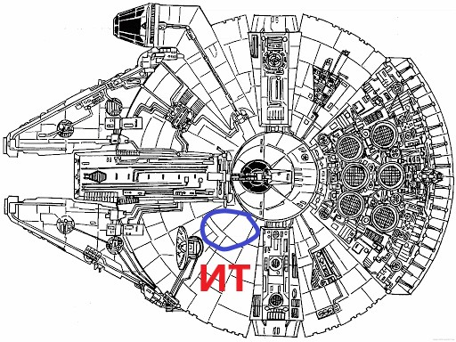
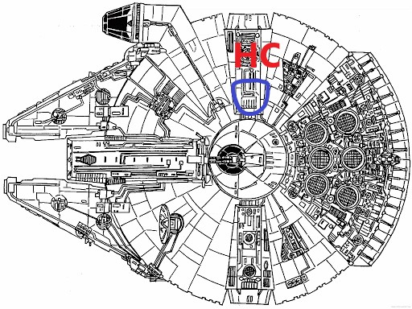

{% extends "base.html" %}

{% block content %}
<div style="text-align: center;">
    {% if prof and ('строитель' in prof or 'инженер' in prof) %}
    <h2>Инженерные тренажёры</h2>
    
    {% else %}
    <h2>Научные симуляторы</h2>
    
    {% endif %}
</div>
{% endblock %}
